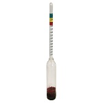
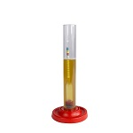
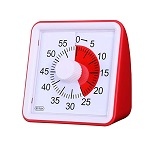
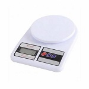
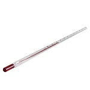
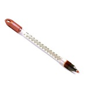
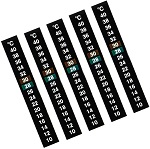
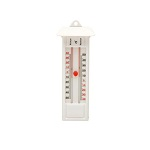
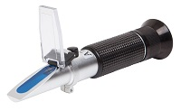

Equipos
Medición
Densímetro
Para medir la densidad del mosto. Escala 1000-1100.
Probeta 150 cc
Probeta de 150 ml para tomar muestra del mosto a medir con el densímetro.
Reloj temporizador
Timer de 60 minutos para controlar los tiempos durante los diferentes procesos de elaboración.
Balanza electrónica
Balanza digital con capacidad máxima de 7 kg, peso mínimo de 1 gr y subdivisión de 1 gr.
Termómetro de vidrio
Para medir la temperatura del mosto, agua, cerveza, etc. Escala: 0 - 110 °C.
Termómetro flotante
Puede dejarse inmerso en una olla para controlar la temperatura.
Termómetro adhesivo
Para pegarlos a los fermentadores y controlar su temperatura. Escala: 14 - 32 °C
Termómetro de máxima y mínima
Para instalar en salas de elaboración, fermentación y maduración.
Refractometro
Ideal para determinar la cantidad de azúcares en el mosto (densidad). El sistema ATC permite de medir la densidad sin tenere que enfriar el mosto. Escala 1 : 0-32% Brix - Precicsión: 0.2 %. Escala 2: 1,000-1,130 gravedad específica (GE) - 0.001. ATC: Compensación automática de temperatura (10°C - 30°C)